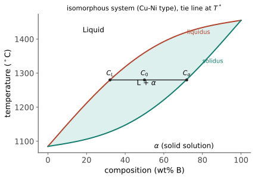
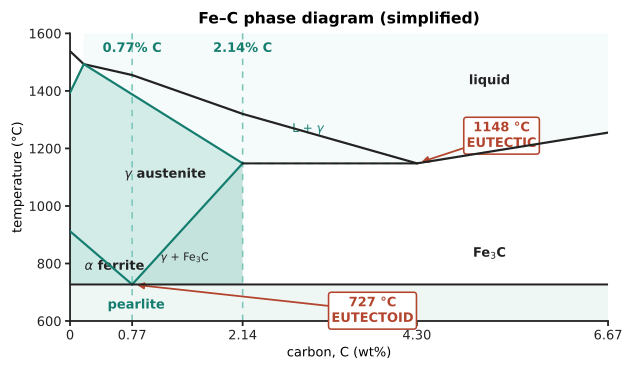

热力 I · 相图：材料的地图
把一堆铜和镍熔在一起冷下来，会得到什么？什么温度下是液体、什么成分下分成两种固体？相图一张纸回答全部——它是热力学替材料人算好的"平衡态地图"，读图能力是材料工程师的第一识字课。本页从 Gibbs 自由能出发建立读图法，主角是两张图：匀晶（教学价值）与 Fe–C（工业价值之王）。
1. 热力学三分钟：为什么会有相图
相 = 结构与成分均匀的区域。平衡由 Gibbs 自由能 \(G = H - TS\) 最小裁决（🔗 数学站信息论 III 的最大熵、物理站热统——同一位裁判）：低温焓主导（有序晶体赢）、高温熵主导（无序液体赢）——熔化就是熵的胜利。混合两组元时混合熵总是奖励互溶、混合焓看"异类原子相处愉快否"——两者的拉锯画出相界。Gibbs 相律：
（\(F\) 自由度、\(C\) 组元数、\(P\) 相数。）读图前先用它对账：单相区可自由动温度与成分（\(F=2\)）；两相区温度定则两相成分定（\(F=1\)——所以有连接线）；三相共存只在孤点/水平线上（\(F=0\)——共晶线为什么是水平的，相律一行回答）。
2. 匀晶相图与杠杆定则（读图基本功）
两组元无限互溶（Cu–Ni：同为 FCC、原子尺寸相近——Hume-Rothery 规则【研】）给出最简单的"透镜"：

两相区读图三步（一切复杂相图都是这三步的拼装）：① 画水平连接线；② 两端点读成分（\(C_L\)、\(C_\alpha\)——两相的成分由温度定，不由你配的料定！）；③ 杠杆定则读数量：
（【推】溶质守恒一行：\(C_0 = f_\alpha C_\alpha + (1-f_\alpha)C_L\)。名字的由来：\(C_0\) 是支点，哪端"杠杆臂"长，对面那相多。）
凝固的成分再分配：先结晶的固体富高熔点组元 ⇒ 实际铸造（冷速快、扩散来不及）产生枝晶偏析——铸锭为何要均匀化退火（热力 II 的扩散来收拾），"平衡图 + 动力学修正"是相图使用的完整姿势【研：Scheil 方程】。
3. 共晶与中间相（组装复杂相图的零件）
共晶反应 \(L \to \alpha + \beta\)：两固相互溶有限时，液相线从两端下压、交于共晶点——该成分熔点最低、凝固直接长出两相交替的层片组织。焊锡（Sn–Pb/Sn–Ag–Cu）、铸铁、Al–Si 铸造合金全靠共晶的低熔点与好流动性。同族亲戚（共析：固→固+固；包晶）反应式记形状即可。中间相/金属间化合物：相图中部的窄竖线（如 Fe₃C）——成分固定、通常硬而脆，既是强化的筹码也是脆化的隐患。
4. Fe–C 相图（工业之王，值得单独背）

五个角色：铁素体 α（BCC，溶碳 ≤0.02%——间隙太小，结构 II 的几何伏笔兑现）、奥氏体 γ（FCC，溶碳至 2.14%——高温才有）、渗碳体 Fe₃C（硬脆化合物）、珠光体（共析产物：α+Fe₃C 层片）、液相。两条关键水平线：共晶 1148 °C（铸铁的世界，C>2.14%）与共析 727 °C：
钢的成分逻辑一句话：碳量决定珠光体比例——亚共析钢（<0.77%C）软韧、过共析钢硬脆，杠杆定则直接算比例。但相图只给平衡态：快冷不走平衡路（马氏体！）——这正是下下页热处理的全部戏剧，相图是地图、不是时刻表（时刻表 = TTT 图，热力 III）。
5. 数字感与反直觉
- 必背五数：727 °C（共析）、0.77%C（共析点）、2.14%C（钢/铸铁分界）、1148 °C（共晶）、1538 °C（纯铁熔点）；
- 反直觉：两相区里相的成分不听你的配料、只听温度（配料只决定两相的比例）；共晶合金比两个纯组元熔点都低（混乱降低自由能——冰盐撒路化雪同理）；碳含量差 1% 能让铁的性格从可拉拔的软钢变成敲得碎的铸铁——微量成分的杠杆是冶金的第一魔法。
【研】对标 Porter & Easterling《Phase Transformations》§1；正规溶液模型、公切线构造（\(G\)-\(x\) 曲线到相图的推导）与 CALPHAD 计算相图是研究生标准装备（前沿 III 的计算材料学衔接）。
相图说了"去哪"，没说"多快"。下一页：扩散——原子的迁徙学，一切热处理的时钟。